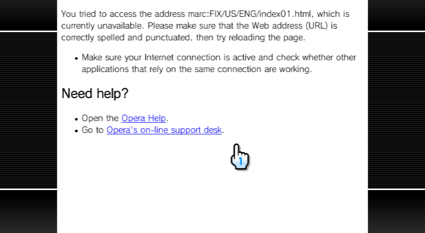
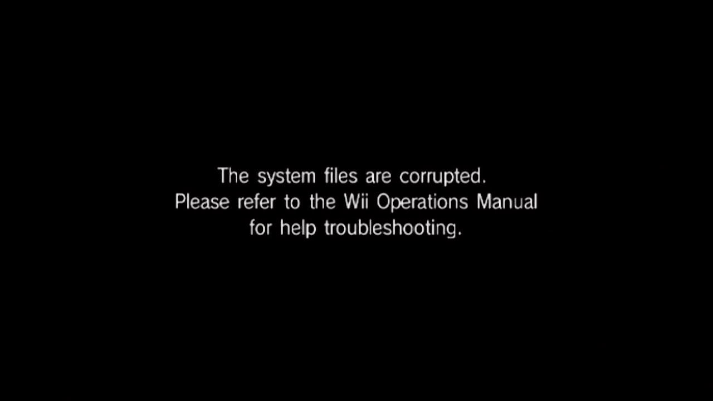
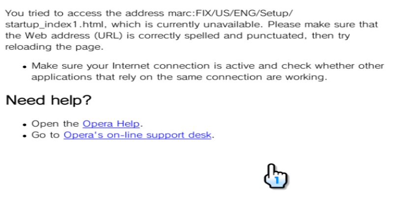
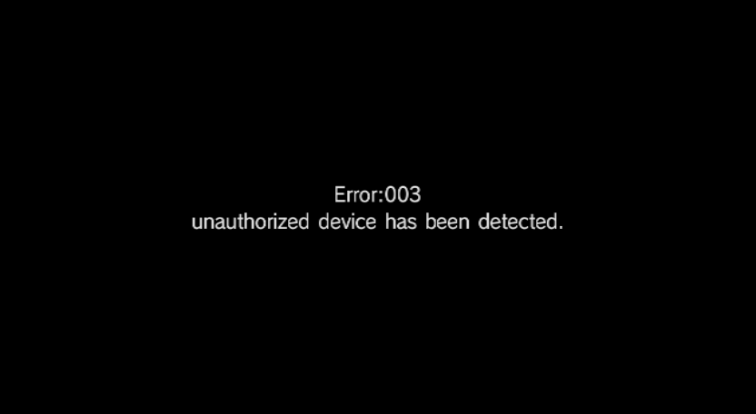

I brick
Un "brick" di solito significa che la console ha raggiunto uno stato in cui il suo prossimo scopo nella vita è quello di fermacarte o di oggetto da collezione.
I brick possono verificarsi per svariati motivi, tuttavia di solito sono il risultato di software danneggiati o di modifiche improprie effettuate tramite homebrew.
Prevenzione dai brick
Prevenire un brick comporta molte regole che variano dal buon senso al backup di sicurezza. Ecco delle raccomandazioni generali su cosa non fare:
- NON seguire tutorial vecchi, usare homebrew vecchi, o guardare videoguide su Internet a meno che non sia ESPLICITAMENTE INDICATO dallo sviluppatore dell'homebrew.
- NON, sotto QUALSIASI CIRCOSTANZA, USARE L'HOMEBREW
Pimp My Wii. È PERICOLOSO e fa cose che possono BRICKARE LA TUA CONSOLE! - NON installare pacchetti di IOS come DARKCORP, che sovrascrivono la maggior parte degli IOS con cIOS. È PERICOLOSO e pesantemente obsoleto.
- NON ripristinare i backup della NAND di altre console!
- NON installare IOS che non sono destinati al tuo sistema (esempio: IOS per Wii su Wii mini)
- NON cambiare la regione della console su vWii o Wii mini con metodi destinati a Wii.
- NON usare servizi di Nintendo Wi-Fi Connection a meno che non siano protetti da RCE (come lo è Wiimmfi). Fare altrimenti potrebbe consentire a un malintenzionato di BRICKARE la tua console!
- Installa solo gli aggiornamenti intesi per la tua regione!
- Installare gli aggiornamenti per un'altra regione potrà essere innocuo, alla meglio, o potrebbe risultare in un brick da Korean Kii/errore 003, alla peggio. Per evitare che accada, se hai comprato una console Wii usata, esegui un SysCheck per verificare la regione originale. Se è coreana, presta ESTREMA attenzione agli aggiornamenti di sistema, e considera di cercare supporto per l'assistenza.
- NON cancellare o modificare file di sistema, installare versioni vecchie del menu Wii o degli IOS, e NON installare nessuna mod dei file di sistema a meno che tu non sappia cosa stai facendo!
- Un esempio di modifica dei file errata è rimpiazzare l'IOS80 sul Wii mini, che potrebbe portare a un brick dal Wi-Fi.
- NON installare homebrew da fonti inaffidabili o se il codice sorgente non è disponibile.
- I software dall'Open Shop Channel sono sicuri.
- Ci sono stati incidenti di software malevoli sviluppati per Wii in passato, mentre alcune app sono semplicemente sviluppate male. Assicurati di sapere ciò che stai installando, e di installare solo quel che ti serve.
- I forwarder per homebrew danneggiati o non stabili potrebbero causare un brick dal banner. Continua a caricare gli homebrew dall'Homebrew Channel se non ne hai veramente bisogno.
- Assicurati di sapere quello che stai facendo quando esegui applicazioni homebrew; soprattutto quelli in grado di modificare i file di sistema. Presta PARTICOLARE attenzione quando usi applicazioni come:
- AnyTitle Deleter
- AnyRegion Changer
- KoreanKii (causa secondaria del brick da Korean Kii/errore 003)
- Downgrader del firmware
- Qualsiasi altra app che modifica file di NAND critici
- NON TOCCARE L'ALIMENTAZIONE O IL PULSANTE POWER QUANDO INSTALLI O MODIFICHI FILE DI SISTEMA.
- Se l'alimentazione è instabile (es. a causa di una tempesta o di un blackout), interrompi quello che stai facendo finché non hai di nuovo un'alimentazione stabile.
- Questo si applica anche ai processi pericolosi come il ripristino della NAND tramite BootMii, che potrebbe portare a un brick totale se qualcosa va storto.
In qualsiasi caso, dovresti assolutamente:
- Avere BootMii installato come boot2 se possibile, altrimenti come IOS.
- Avere Priiloader installato indipententemente dalla versione di BootMii scelta.
- Avere sempre un backup della NAND a portata di mano, soprattutto prima di tentare qualsiasi operazione rischiosa. Nota che, in alcuni casi, BootMii potrebbe non essere accessibile, quindi pianifica in anticipo.
Diagnosi
Questa è una sezione che intende ad aiutare a diagnosticare un brick potenziale, in ordine da meno a più severo. Se il tuo problema sembra non essere coperto in questa sezione o nella guida, unisciti al server Discord di Nintendo Homebrew (in inglese) per ricevere assistenza.
- La console si avvia e prosegue nel menu Wii. Nessuna applicazione è malfunzionante, le Impostazioni console Wii funzionano e tutto sembra andare bene. Nessun brick.
- La console si avvia e prosegue nel menu Wii.
- Se dopo aver avviato un canale specifico ricevi
I file di sistema sono danneggiati, vedi: brick dal banner. - Se dopo aver aperto le Impostazioni console Wii vedi un errore che ricorda il browser Opera, vedi: semibrick.
- Se dopo aver avviato un canale specifico ricevi
- La console si avvia, vedi la schermata di salute e sicurezza, ma premendo A rimane in una schermata nera.
- Se ciò è successo dopo aver installato un tema, vedi: brick dal tema.
- Se ciò è successo dopo aver installato un WAD, vedi: brick dal banner.
- Se ha iniziato a farlo a caso, e puoi accedere alla modalità di manutenzione tenendo premuto +/- nella schermata di salute e sicurezza, vedi: brick dalle mail.
- La console si avvia, MA vedi SUBITO un errore che ricorda il browser Opera. Vedi: brick dal menu Wii/Opera.
- Errore 003. Vedi: brick da Korean Kii/errore 003.
- Non accade nulla, schermo nero, MA BootMii come boot2 è accessibile. Vedi: brick dall'IOS.
- Non accade nulla, schermo nero, MA la console Wii può essere accesa con un telecomando Wii o la Recovery Mode può essere avviata. Vedi: brick dal Wi-Fi.
- Non accade nulla, schermo nero. La console non può essere accesa col telecomando Wii, la Recovery Mode non si avvia e BootMii da boot2 non è accessibile. Vedi: brick a basso livello.
Tipi di brick
Qui, i vari tipi di brick per Wii verranno discussi in ordine di severià, con relativi sintomi, cause e soluzioni.
Semibrick
Sintomi
Navigando nelle Impostazioni console Wii, ricevi un errore dal browser Opera con qualcosa del tipo You tried to access the address (URL), which is currently unavailable. (Hai provato ad accedere all'indirizzo (URL), che al momento non è disponibile.) In alcuni casi, alcune impostazioni sono comunque accessibili, ma altre no.
Causa
Un semibrick si verifica quando viene installato un menu Wii o un tema di regione diversa. Poiché le Impostazioni console Wii vengono caricate come pagine HTML tramite Opera, i temi spesso li sostituiscono e li mettono in cartelle diverse; essenzialmente portando a un errore 404 Not Found (404 Non Trovato) ma nella forma di un brick.

Soluzioni
Verifica con AnyRegion Changer che la regione della console sia la stessa di quella richiesta dal tema o dal menu Wii installato.
Se ciò è stato causato da un tema che hai installato, usa csm-installer per reinstallare il tema originale.
Se ciò è stato causato da un WAD del menu Wii che hai installato, usa NUSGet per riottenere il menu Wii originale.
DANGER
Fai attenzione quando scarichi il WAD del menu Wii. Assicurati di scegliere la stessa versione con la regione corretta.
Se sei nel corso di un cambio di regione, usa ARC-ME per impostare automaticamente tutte le impostazioni in modo che corrispondano al menu Wii.
Brick dal banner (banner brick)
Sintomi
Provi ad accendere la console, vedi la schermata salute e sicurezza e, quando premi A, la schermata passa; ma poi rimani perennemente su uno schermo nero. Questo è successo dopo aver installato un WAD e riavviato il sistema o ritornato nel menu Wii. Alternativamente, il menu Wii si avvia, ma aprire un canale risulta nel blocco della console. In alcuni casi, potresti vedere la schermata "I file di sistema sono danneggiati".

Causa
I brick dal banner capitano se installi un file WAD che contiene un banner o un'icona non validi.
Soluzioni
Se il menu Wii si avvia ancora, vai nell'Homebrew Channel e usa YAWM ModMii Edition o il tuo WAD manager per disinstallare il canale danneggiato.
Se il menu Wii non si avvia, ma hai Priiloader installato, accedici tenendo premuto RESET mentre la console si accende. Seleziona l'Homebrew Channel e usa YAWM ModMii Edition o il tuo WAD manager per disinstallare il canale danneggiato.
Se non hai o non puoi accedere a Priiloader, potresti provare la modalità di manutenzione. Tieni premuti + e - nella schermata di salute e sicurezza (non premere A!).
Come ultima risorsa, potresti usare BlueBomb per accedere all'Homebrew Channel stando nella schermata di salute e sicurezza.
Brick dal tema (theme brick)
Sintomi
Provi ad accendere la console, vedi la schermata salute e sicurezza e, quando premi A, la schermata passa; ma poi rimani perennemente su uno schermo nero. Questo è successo dopo aver installato un tema.
Causa
Un brick del tema capita quando viene installato un tema malformato.
Soluzioni
Per risolvere questo problema, apri l'Homebrew Channel tramite Priiloader o BootMii come boot2 e accedi a csm-installer per installare un tema predefinito come quello classico del menu Wii. Alternativamente, entra in YAWM ModMii Edition e installa il WAD del menu Wii predefinito CORRETTO per la tua regione e versione.
Brick dalla mail (mail brick)
Sintomi
Provi ad accendere la console, vedi la schermata salute e sicurezza e, quando premi A, la schermata passa; ma poi rimani perennemente su uno schermo nero. La modalità di manutenzione è ancora accessibile.
Causa
Un brick dalla mail capita quando la console ha troppe mail da gestire, o quando una mail malformata è nella Bacheca Wii, causando un crash avviando la console normalmente. Poiché la Bacheca Wii è costantemente attiva sotto qualsiasi canale, questo impedisce al menu Wii di caricarsi interamente.
Soluzione
Tenendo premuti i tasti + e - sulla schermata di attenzione, puoi entrare nella modalità di manutenzione, in cui la Bacheca Wii non viene caricata. Se l'Homebrew Channel non è installato, segui Bluebomb.
Da qui, l'Homebrew Channel può essere avviato e il brick può essere risolto cancellando i dati della Bacheca Wii tramite cdbackup.
Brick dal menu Wii/Opera (Wii Menu/Opera brick)
Sintomi
Accendendo la console Wii, ottieni un errore dal browser Opera con qualcosa del tipo You tried to access the address (URL), which is currently unavailable. (Hai provato ad accedere all'indirizzo (URL), che al momento non è disponibile.) Questo accade ogni volta che accendi la console, e non può essere aggirato in alcun modo.
Causa
Questo brick è una versione più fatale del semibrick. Se il SYSCONF (file di configurazione di sistema) viene danneggiato, la console la ricreerà e reinizierà la configurazione iniziale.
Tuttavia, le pagine di configurazione sono in posizioni simili a quelle delle Impostazioni console Wii. Se hai un menu Wii di una regione diversa da quella della console, non riuscirà a trovarle.

Soluzioni
Se hai Priiloader, usalo per avviare l'Homebrew Channel e reinstallare il tema o il menu Wii originale.
Nel caso non hai Priiloader o la tua console non è modificata, prova BlueBomb.
Alternativamente, puoi provare con la Recovery Mode.
Brick da KoreanKii/errore 003 (KoreanKii/error 003 brick)
Sintomi
All'avvio compare una schermata come questa:
Error:003
unauthorized device has been detected.
Causa
Quando le console Wii coreane furono rilasciate, Nintendo cambiò le chiavi di crittazione per queste unità come un tentativo disperato di prevenire modifiche e homebrew. Seppur fallirono nel loro intento, lasciarono un controllo nel menu di sistema 4.2/4.3 per determinare se una Korean Key è presente o no su console non coreane. Se questo controllo ha successo, l'errore appare e la console Wii rimane brickata.
Di solito è una conseguenza diretta a un aggiornamento di sistema o un cambio di regione da una console Wii coreana.
Soluzioni
Dato che questo brick spesso capita dopo un aggiornamento di sistema, Priiloader non sarà presente. Nel caso in cui lo fosse, puoi sistemare installando una versione del menu Wii precedente o rimuovendo la chiave usando l'homebrew KoreanKii.
Le Wii coreane sono state rilasciate con la versione 3.3, quando Nintendo aveva sistemato il Trucha bug nel boot1, quindi BootMii come boot2 non può essere installato né usato in qualsiasi console Wii coreana.
Anche se ciò lascia la console in una situazione pericolosa, è comunque sistemabile. Questo implica andare nella Recovery Mode, dove un exploit può essere attivato per accedere all'Homebrew Channel e ripristinare le condizioni che hanno causato il brick. Nota che per poter utilizzare questo metodo è necessario disporre di un drivechip.
Brick dall'IOS (IOS brick)
Sintomi
Questo brick sembrerà identico a un brick a basso livello a causa di un malfunzionamento del menu Wii tramite IOS; tuttavia non esiste una corruzione completa a basso livello della NAND, né un hardware fallimentare.
Causa
Questo brick capita spesso quando l'IOS del menu Wii è un abbozzo, o se è stato installato un tipo di IOS non corretto. Di solito è la conseguenza di un tentativo di installazione di una versione precedente del menu Wii. Se questo problema è sorto dopo aver installato un IOS80 normale su Wii mini, vedi: brick dal Wi-Fi.
Soluzioni
Devi avere BootMii installato come boot2 per poterlo sistemare.
Puoi ripristinare un backup della NAND, o puoi fare questo:
- Usa NUSGet per preparare un WAD del menu Wii originale.
- Usa BootMii per avviare l'Homebrew Channel e usare un WAD manager per installare il WAD nel menu Wii.
Per vWii, vedi: recuperare un canale/IOS vWii.
Brick dal Wi-Fi (Wi-Fi brick)
Sintomi
Questo brick sembra identico a un brick a basso livello, tuttavia puoi ancora accendere la console Wii col telecomando Wii e puoi ancora avviare la Recovery Mode su una console Wii originale.
Causa
Questo brick sorge quando il modulo Wi-Fi (o Bluetooth) della console è danneggiato o non inserito correttamente. In questi casi, la console rimarrà in una schermata nera aspettando una risposta dall'IOS.
Può succedere anche su Wii mini se installi un IOS Wii normale, perché Wii mini non ha un modulo Wi-Fi.
Soluzioni
Per risolvere questo problema. puoi risaldare o rimpiazzare il modulo Wi-Fi/Bluetooth.
Se su Wii Mini, devi installarci un modulo Wi-Fi.
Se entrambi non funzionano, vedi: brick a basso livello.
Brick a basso livello (low-level brick)
Sintomi
Schermo totalmente nero, nessuna risposta ad alcun tasto premuto. La Recovery Mode non può essere avviata, neanche BootMii come boot2 (o non esisteva in primo luogo). A tutti gli effetti, la console sembra morta.
Causa
Questo brick capita quando il boot1 o boot2 è danneggiato, o se c'è un componente hardware fallimentare.
Soluzioni
Prima dovresti controllare se il problema è dato dall'hardware. In ordine, fai i seguenti:
- Prova che la console funzioni ancora (accetta dischi come al solito, li gira correttamente, i telecomandi Wii si connettono) prima di provare i passaggi successivi. Se è questo il caso ed è solo lo schermo a non essere mostrato, potresti avere un cavo video difettoso oppure un guasto estremamente raro della porta video o della GPU.
- Se su una Wii mini, ed è stato installato un IOS80 normale, vedi: brick dal Wi-Fi. Se i passaggi per risolvere il brick dal wifi non sono riusciti, prosegui.
- Prova ad avviare la Recovery Mode (solo Wii normali). Se la console si avvia in Recovery Mode, vedi: brick dal Wi-Fi o: brick da IOS. Se i passaggi per risolvere il brick dal wifi o da IOS non sono riusciti, prosegui.
- Risalda il lettore dischi e prova ad accendere la console normalmente. Se ancora non parte, sostituisci il lettore dischi. Se non funziona, prosegui.
- A questo punto, o c'è una corruzione a basso livello del boot0/boot1, una NAND fallimentare, o un fallimento hardware più grave ancora sconosciuto. Considera chiedere aiuto online o di comprare un'altra console Wii.